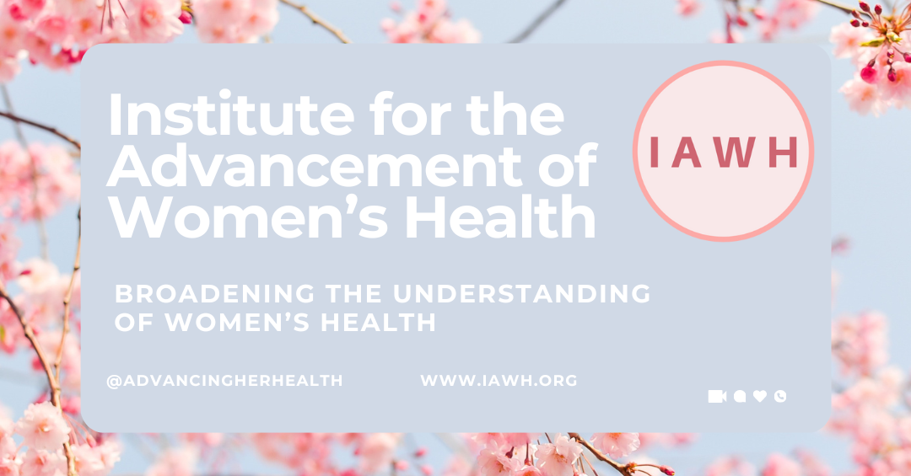
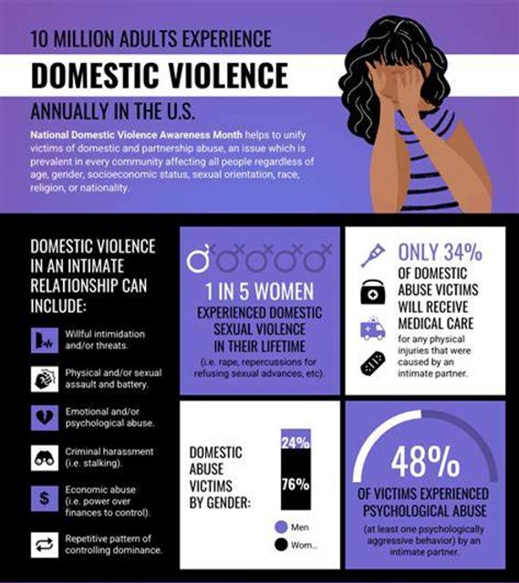

Intimate partner violence is a pervasive but whispered - about issue that extends beyond the boundaries of heterosexual relationships. While often portrayed as violence between a man and a woman, this harmful behavior can and does occur in various relationship dynamics. Lesbian women, gay men, individuals in transgender relationships, and those in non-binary partnerships are all at risk of experiencing intimate partner violence. The abuse can manifest in multiple forms, including physical harm, emotional manipulation, psychological control, and financial coercion.

Every individual, regardless of their gender identity or sexual orientation, deserves to live free from fear and harm. Acknowledging the diverse experiences of survivors is a critical step in addressing and preventing intimate partner violence in all its forms. Read Lisa’s story during this observation of Domestic Violence Awareness Month.
Lisa’s Story
Since she was a teen, Lisa had been a little less than confident, a little self-conscious about the gap between her two front teeth, her dark skin, full lips, and curvy body. For years she doubted that her peers accepted her as an equal. She always thought that others felt that she was not as intelligent as them, even though all through high school she excelled at advanced placement studies. When she would have plutonic friendships with other teens and then later with other young adults, she would often take on a more subservient role, adjusting her life to accommodate. Now that she is an adult and living on her own, living comfortably, she took a position at an Amazon warehouse, promoted to manager, where she could make good money and develop a small network of acquaintances. It was on this job that she met her Jessi. Lisa loved her job at Amazon. She was thriving in the hard-hustling, fast-paced environment. But after she started dating Jessi, things began to change.

At first, Jessi seemed perfect. She was charming, attentive, and it seemed like they vibed. This was not the first lesbian relationship that Jessi had been in, but it was for Lisa. She was not only learning to handle her new feelings and emotions, but also managing this relationship with her deeply religious family. As time went on, Jessi's behavior shifted. She began to criticize Lisa's appearance, telling her she wasn't attractive and that no one else would want to be with her. She would make snide comments about Lisa's weight, her clothes, and even her laugh. They would have screaming matches at home, in restaurant parking lots, even on vacation waiting to get on the London Eye. In the end Lisa would most always be the one to back down and suck it in. Lisa started to feel self-conscious, like she did when she was younger, and she began to doubt herself so much.
Jessi's jealousy was another issue. She didn't like Lisa spending time with her friends, accusing her of flirting with men. Lisa's social circle began to shrink as she distanced herself from her friends to avoid conflict. When they were together, which was just about any time that they were not at work, Jessi would check Lisa's phone, questioning every message and call. Lisa felt trapped, unable to maintain any relationships outside of her toxic partnership.
Jessi also isolated Lisa from her family. She would make excuses for why Lisa couldn't visit her sisters or attend family gatherings. Lisa felt torn between her love for her family and her desire to keep the peace with Jessi. She began to live a life outside of the traditions and customs that her family had long enjoyed like celebrating family birthdays, Thanksgiving, and Christmas. Instead, Jessi insisted that they find their own path, taking up unusual religious practices, believing in wild conspiracy theories that push hate, and made Lisa feel guilty for wanting to spend time with her family on holidays.
The psychological abuse was relentless. Jessi would gaslight Lisa, making her question her own reality. She would deny saying hurtful things, insisting that Lisa was imagining it. Lisa felt like she was losing her mind, unable to trust her own memories and perceptions.
At work, Lisa's performance began to suffer. Working a different shift than Lisa at Amazon, Jessi would call Lisa constantly, demanding to know where she was and who she was with. The stress and anxiety took a toll on Lisa's mental health, making it difficult for her to focus on her job. She started to make mistakes and missed deadlines, eventually losing her job.
One night, Jessi forced herself on Lisa, ignoring her protests and tears. The trauma of that night haunted Lisa, making her feel small, less than, like an unimportant thing that Jessi could manipulate and control. It also sparked a determination within her to not go on this way. She realized she couldn't continue living this way.
Lisa reached out to a local domestic violence shelter, where she found support and resources to help her understand what she was experiencing, understand all of her feelings and how to escape an abusive relationship. She encountered other women who were involved in relationships where they felt that they were in over their head, but to embarrassed and ashamed to tell the truth to family and friends or ask for help. She was not alone. She connected with a counselor who helped her understand the dynamics of intimate partner violence and provided her with strategies to move away from Jessi and begin to slowly rebuild her self-esteem. She also found solace in reading resources on domestic violence, which gave her the courage to take the first steps towards getting back to the old Lisa.
There is no neat ending or closure to Lisa’s story. Even though she did successfully break away from her relationship with Jessi and is in therapy, she is still emotionally impacted by the experience. She remains distrustful of anyone who wants to build a romantic relationship with her, and her self-confidence is broken – hearing the little voices of criticism about her looks, her weight, her clothes, if she is good enough. Lisa left her job at the Amazon warehouse and moved away to a small town, where nobody knows her, and where she will try to start a new chapter, as she continues to work on herself with the support of her online therapist/counselor for one-on-one support and group talk therapy, a few friends that she stays in touch with, and her family that was always waiting in the wings, and didn’t abandon her.
Shame is often associated with domestic violence/intimate partner violence. No one wants to admit to the failure of judgement of another person’s character – someone that we have allowed to enter the most intimate and personal spaces in our lives. No one wants to deal with the fact that others around us can possibly see things in people that we cannot see – they’re jealous, they’re out to get me, they cannot stand to see me happy and any number of other excuses we offer or defenses we use to hide from the truth … So often, the fear and stigma associated with needing and seeking mental health support keeps us from making the first step.

If you can relate to Lisa’s story or know someone who this story reminds you of, you can begin the journey to a new pathway forward, learning more starting with the resources below. Share this information with another woman so that she might share it with even another woman.
Resources:
· The National Domestic Violence Hotline
Free | 24/7 | ConfidentialCall: 800-799-SAFE (7233) or 800-787-3224 (TTY)Text: "START" to 88788. Hotline Privacy Policy. Message and data rates may apply. Text STOP to opt out.Chat: thehotline.org
· Find a Shelter or Program Near You – Enter your zip code to identify resources near you.
· Battered Women’s Justice Project
· National Network to End Domestic Violence
· National Network to End Violence Against Immigrant Women
· National Online Resource Center on Violence Against Women
· Not Alone: Together Against Sexual Assault, Center for Changing our Campus Culture
· Loveisrespect (National Dating Abuse Helpline)
· National Center on Domestic and Sexual Violence
· National Center on Domestic Violence, Trauma & Mental Health
· National Center for Victims of Crime
· National Clearinghouse on Abuse in Later Life
· The National Coalition Against Domestic Violence
· RAINN (Rape, Abuse & Incest National Network)
This article first appeared on the IAWH Health blog on October 14, 2024 and is preserved here as part of the IAWH Health Journal archive. Information reflects what was known at the time of publication. This article is for general education and is not medical advice.